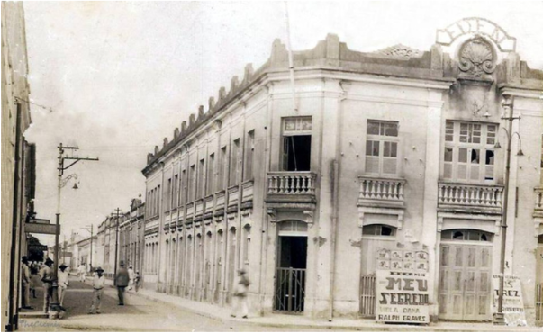
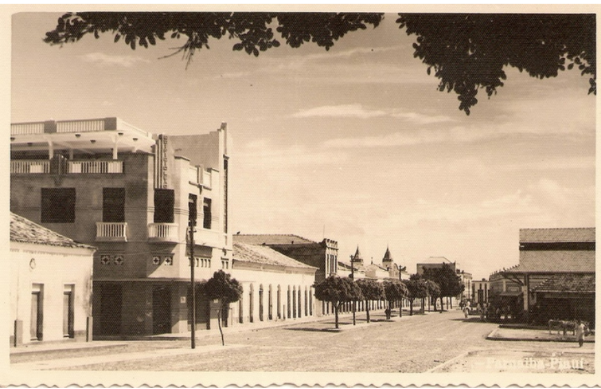

Santa Casa de Misericórdia
Parnaíba - cuidado e acolhimento histórico
As instituições de saúde e assistência sempre foram pilares na construção da identidade social de Parnaíba. A Santa Casa de Misericórdia, com sua arquitetura imponente e história centenária, consolidou-se como o principal porto seguro para gerações de parnaibanos em busca de cura e amparo.
Em registros históricos, o hospital surge não apenas como um centro médico, mas como um símbolo de solidariedade e progresso urbano. A memória da Santa Casa permite compreender a evolução da medicina local e o espírito de acolhimento que define a cidade, preservando o legado de profissionais e irmandades que dedicaram a vida ao cuidado do próximo.
Imagens relacionadas


